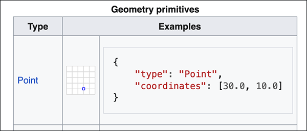

Spatial Thinking with GIS: Week 1 Class 1 Assignment
Spring 2026 | UENV 3200 - CRN 11009 + UURB 3210 - CRN 111008
🧭 Preamble
In this first assignment, we will pick up from the Part I section of the Class 1 Demonstration Lab.
To start, make sure to review the components and workflow of the demonstration lab, both Part I and Part II:
📚 Week 1 Class 1 Readings
This week’s readings include two relatively short online articles that explore the historical significance of the John Snow mapping. Read both; the first quiz that will be available at the beginning of Week 2 will feature both multiple choice and true vs. false questions covering both readings.
🗺️ Part I: Spatial Data
We will utilize the GeoJSON file format for this first assignment GeoJSON.

Step 1:
As we did in the demonstration lab, utilize an internet browser to geojson.io. Position the online map to your current neighborhood and place a point near were you live. It can be as precise as you would like it to be: building rooftop for high precision; a nearby intersection for less precision.

Step 2:
Next, download the resulting file as map.geojson using the Save option for format type GeoJSON:

📤 Assignment 1 Submission
Make sure to join the Class Slack Team:
There is also a direct invite link to the Slack workspace (please do not share with others outside the course):
This invite will expire quickly; if you are unable to access the team via the link, contact the instructor for an updated invite. The instructor can also add you directly upon request.
Once you have joined the Class Slack Team, find the #introductions channel. Say hi there, and attached your map.geojson file and submit your message in the channel.
Before the final submission, make sure to change your map.geojson to first_name_last_name.geojson. For example, John Doe would read as follows:
john_doe@geojson
Next, find the Assignment 1 submission location in Canvas (this should be obvious in your Canvas feed). Again, submit your renamed first_name_last_name.geojson to the assignment submission.
In summary, you will produce map.geojson once, then rename once with your own name; but submit to both the Class Slack Team and the Assignment 1 Class submission location.